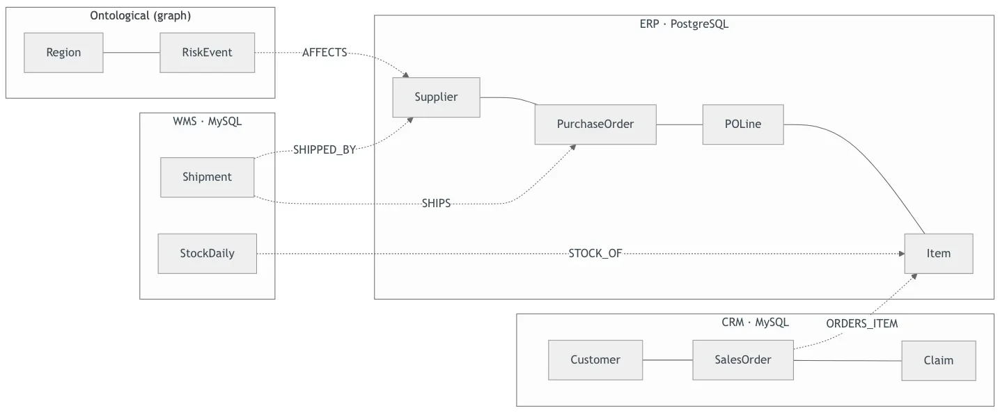
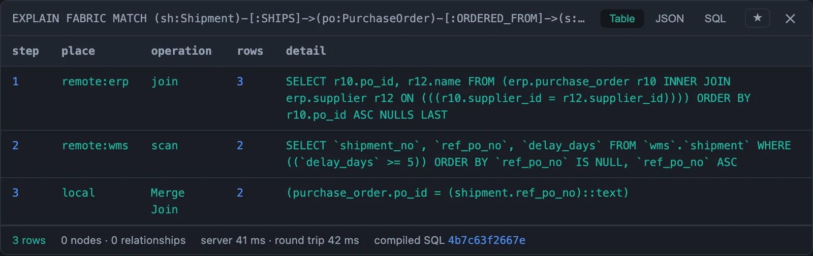
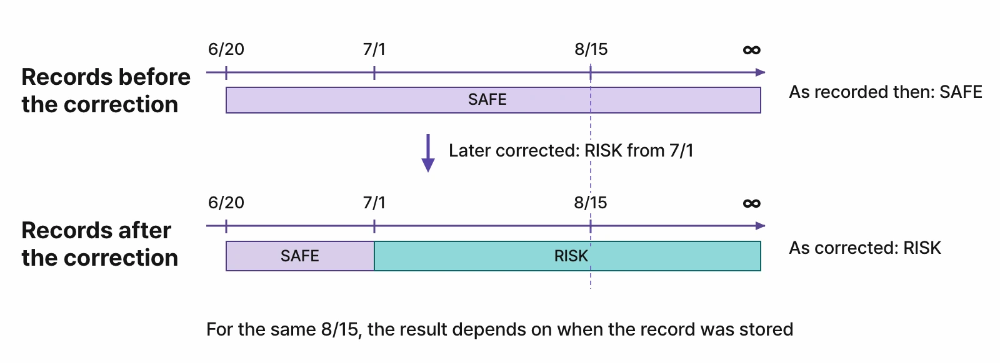
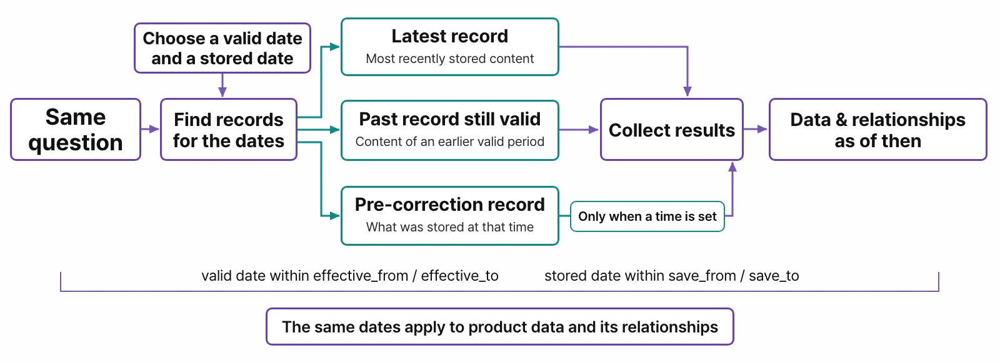
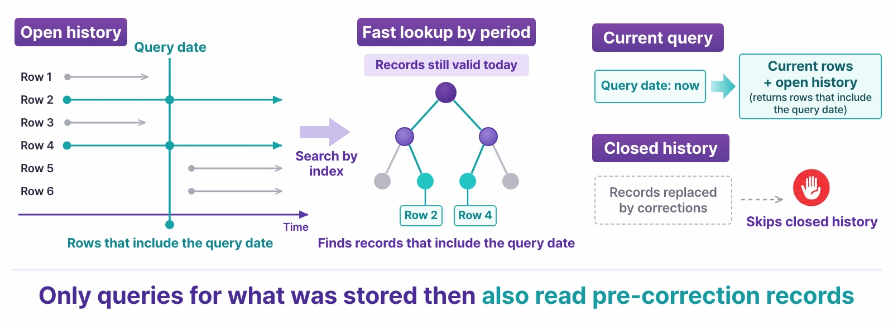
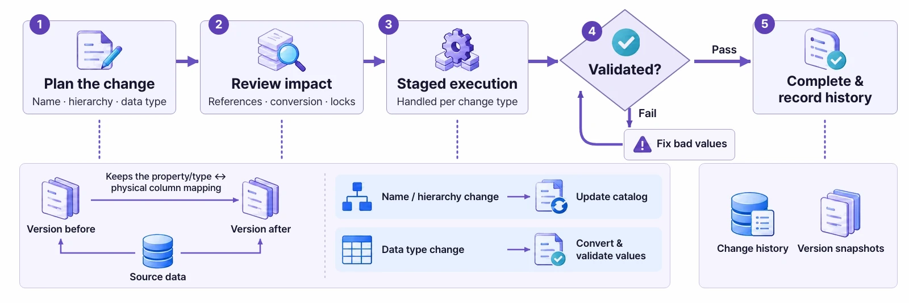
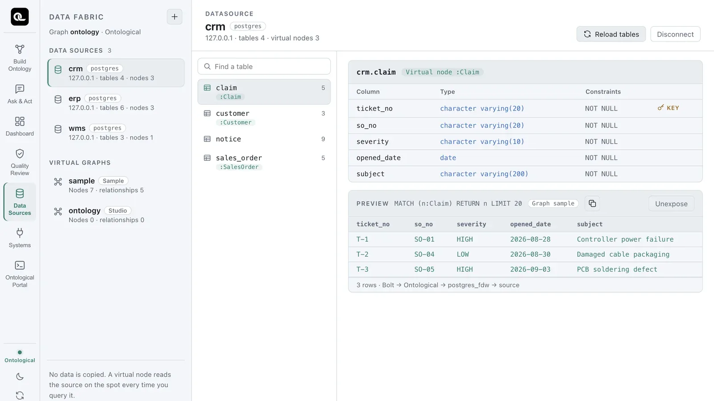

Our Products · Ontological DB

Ontological DB
An ontology database for agentic AI. Your PostgreSQL becomes a graph database as it is.
Ask in Cypher, and link data from other systems into the graph without copying it.
PostgreSQL 16 extension · Rust (pgrx) · Apache-2.0 open source · GitHub · Docs · Tutorials
No separate graph database to build, no data to copy
Purchasing lives in the ERP, logistics in the WMS, customers in the CRM. A question like “Which shipments from suppliers affected by East Asia risks have not arrived yet?”
can only be answered by following the relationships between systems. The usual fix is to stand up a separate graph database and move the data over with ETL,
which means managing servers and permissions twice — and the copy is always behind the source.
Ontological DB adds a graph to the PostgreSQL you already run, with a single extension. You query the data in Cypher,
and tables in other databases are declared as graph nodes without copying them, read from the source at query time.
Permissions, auditing and point-in-time queries are handled by the database itself, so the same rules apply whether a person or an AI agent is asking.
Demo ① Scattered supply-chain data, one Cypher query, no copies — data sources · virtual nodes · virtual relationships (2:23)
Three declarations, one query
Register external databases as data sources, then declare tables as nodes and the key mappings between systems as relationships — once. From then on, a single Cypher pattern queries several databases together, with no join conditions to write.
CREATE DATASOURCE wms WITH ENGINE = 'mysql',
PARAMETERS = {host: '…', database: 'wms', password: $pw}
CREATE VIRTUAL NODE Shipment FROM wms.shipment KEY shipment_no
CREATE VIRTUAL RELATIONSHIP SHIPPED_BY
FROM Shipment(vendor_code) TO Supplier(supplier_id)
// risks in the graph, suppliers in the ERP, shipments in the WMS
MATCH (:Region {name: 'East Asia'})<-[:IN_REGION]-(e:RiskEvent)
-[:AFFECTS]->(s:Supplier)<-[:SHIPPED_BY]-(sh:Shipment)
WHERE sh.ship_status <> 'DELIVERED'
RETURN e.title, s.name, sh.shipment_no
Knowledge stored in the graph (risks) and rows in the source systems (suppliers, shipments) come back from a single query. Not a single row of data is copied.
Demo videos, about two minutes each
Each one starts from an empty database and shows what was actually typed and run in the portal editor. The explanations appear as on-screen captions, in Korean.
Demo ② Three languages, one graph — Cypher and TypeQL read and write an ontology imported from OWL (2:55)
Demo ③ Time travel — the same query five times, changing only the point in time (2:16)
Demo ④ Built-in security — the same query returns different paths depending on the role (2:38)
Demo ⑤ Schema evolution — fixing a wrong type in a live graph (2:08)
Demo ⑥ Agent interface — reading the schema, getting it wrong, fixing it (2:02)
Demo ⑦ Vector search — relationship search finds the answer document search missed (2:16)
Key Features
The database does what applications used to build themselves — and every feature has a tutorial that was actually run to verify it
How It Works
It is a PostgreSQL extension, not a new server. Source databases are reached through PostgreSQL foreign tables (FDW), and Cypher is translated into SQL whose cost the planner estimates.
1. Install
CREATE EXTENSION ontological on PostgreSQL 16. The graph is just tables and indexes inside this database.2. Connect
CREATE DATASOURCE registers a source database. Registering is enough to see its tables, and not a single row of data moves.3. Declare
4. Ask
5. Inspect
EXPLAIN FABRIC to see, step by step, the SQL actually sent to each source and the number of rows that came back.6. Govern


EXPLAIN FABRIC — the ERP joined purchase orders and suppliers internally, and the WMS sent back only the 2 rows matching the delay condition.Two time axes — bitemporal
Every fact records both valid time (when it applies) and system time (when it was recorded that way). Even after a later correction, you can reproduce exactly what a decision was based on at the time. Follow along in the tutorial




How it differs from running a separate graph database
Compared with standing up a separate graph database and moving business data into it with ETL so you can query along relationships.
| Category | Separate graph DB + ETL replication | Ontological DB |
|---|---|---|
| Installation · operations | Stand up and operate a separate graph DB server | One extension on the PostgreSQL you already run |
| Business data | Copied by ETL — the copy always lags the source | Read from the source at query time through virtual nodes; no copies |
| Joins across systems | Join conditions rewritten for every query | Declared once as a virtual relationship; every hop after that applies the join |
| Permissions · auditing | Configured separately in the graph DB and in each source | One set of PostgreSQL roles, row-level security and auditing, enforced even during traversal |
| Point-in-time queries | Snapshots or history tables designed separately | Change only the session’s point in time and the same Cypher returns the results as of then |
| Schema changes | Migration scripts written separately | Plan → expand → migrate → validate → contract, while the service runs |
| How to connect | Graph DB–specific drivers | Both Neo4j drivers (Bolt) and PostgreSQL clients |
Current scope — source databases are read-only, and variable-length traversal over virtual relationships (*1..n) is not supported yet.
Cypher UNION and SPARQL are not supported yet either. Unsupported items for each feature are listed in the product documentation.
Ontological Studio
It comes inside Ontological Studio
Ontological DB is the engine of the desktop app Ontological Studio. One installer bundles PostgreSQL 16, the Ontological extension, the Bolt gateway and the portal, so you can try it right away with nothing else to install.
Connect source databases in the Data Sources tab and expose them as virtual nodes; on top of them, agents build the ontology and answer with evidence. To install it on a server yourself, get the source from GitHub and build the extension.

Related Solutions
Build ontologies, run them, put them to work
Ontological Studio
A desktop app that connects documents and source databases without replication, so agents can build an ontology, answer with evidence, and — after approval — run actions in business systems.
Learn moreOntologic Platform
An execution platform for natural-language queries, root-cause analysis, what-if simulation and monitoring automation on top of the ontology.
Learn moreProcess GPT
An agentic process platform that connects people, AI agents and existing systems in a single business process.
Learn moreRun it yourself
Ontological DB is Apache-2.0 open source. There are seven tutorials, one per feature, each actually run from an empty database.
The fastest way to get started is to install Ontological Studio.
Have more questions?
Want to learn more about Ontological DB, or have a question? Get in touch anytime.